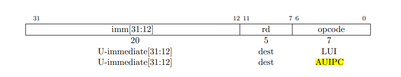
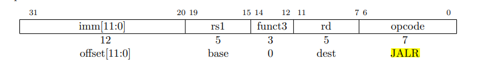

Lab4: Traps
1. RISC-V assembly
(1). 在a0-a7中存放参数，13存放在a2中
(2). 在C代码中，main调用f，f调用g。而在生成的汇编中，main函数进行了内联优化处理。
从代码li a1,12可以看出，main直接计算出了结果并储存
(3). 在0x630
(4). auipc(Add Upper Immediate to PC)：auipc rd imm，将高位立即数加到PC上，从下面的指令格式可以看出，该指令将20位的立即数左移12位之后（右侧补0）加上PC的值，将结果保存到dest位置，图中为rd寄存器

下面来看jalr (jump and link register)：jalr rd, offset(rs1)跳转并链接寄存器。jalr指令会将当前PC+4保存在rd中，然后跳转到指定的偏移地址offset(rs1)。

来看XV6的代码：
30: 00000097 auipc ra,0x0
34: 600080e7 jalr 1536(ra) # 630 <printf>
第一行代码：00000097H=00...0 0000 1001 0111B，对比指令格式，可见imm=0，dest=00001，opcode=0010111，对比汇编指令可知，auipc的操作码是0010111，ra寄存器代码是00001。这行代码将0x0左移12位（还是0x0）加到PC（当前为0x30）上并存入ra中，即ra中保存的是0x30
第2行代码：600080e7H=0110 0...0 1000 0000 1110 0111B，可见imm=0110 0000 0000，rs1=00001，funct3=000，rd=00001，opcode=1100111，rs1和rd的知识码都是00001，即都为寄存器ra。这对比jalr的标准格式有所不同，可能是此两处使用寄存器相同时，汇编中可以省略rd部分。
ra中保存的是0x30，加上0x600后为0x630，即printf的地址，执行此行代码后，将跳转到printf函数执行，并将PC+4=0X34+0X4=0X38保存到ra中，供之后返回使用。
(5). 57616=0xE110，0x00646c72小端存储为72-6c-64-00，对照ASCII码表
72:r 6c:l 64:d 00:充当字符串结尾标识
因此输出为：HE110 World
若为大端存储，i应改为0x726c6400，不需改变57616
(6). 原本需要两个参数，却只传入了一个，因此y=后面打印的结果取决于之前a2中保存的数据
2. Backtrace
这个函数就是实现曾经调用函数地址的回溯，这个功能在日常的编程中也经常见到，编译器报错时就是类似的逻辑，只不过题目的要求较为简单，只用打印程序地址，而实际的报错中往往打印程序文件名，函数名以及行号等信息（最后的可选练习就是实现这样的功能）。
/**
* @brief backtrace 回溯函数调用的返回地址
*/
void
backtrace(void) {
printf("backtrace:\n");
// 读取当前帧指针
uint64 fp = r_fp();
while (PGROUNDUP(fp) - PGROUNDDOWN(fp) == PGSIZE) {
// 返回地址保存在-8偏移的位置
uint64 ret_addr = *(uint64*)(fp - 8);
printf("%p\n", ret_addr);
// 前一个帧指针保存在-16偏移的位置
fp = *(uint64*)(fp - 16);
}
}
根据提示：返回地址位于栈帧帧指针的固定偏移(-8)位置，并且保存的帧指针位于帧指针的固定偏移(-16)位置。先使用r_fp()读取当前的帧指针，然后读出返回地址并打印，再将fp定位到前一个帧指针的位置继续读取即可。
根据提示：XV6在内核中以页面对齐的地址为每个栈分配一个页面。使用PGROUNDUP(fp) - PGROUNDDOWN(fp) == PGSIZE判断当前的fp是否被分配了一个页面来终止循环。
3. Alarm
这项练习要实现定期的警报。首先是要通过test0，如何调用处理程序是主要的问题。程序计数器的过程是这样的：
ecall指令中将PC保存到SEPC- 在
usertrap中将SEPC保存到p->trapframe->epc p->trapframe->epc加4指向下一条指令- 执行系统调用
- 在
usertrapret中将SEPC改写为p->trapframe->epc中的值 - 在
sret中将PC设置为SEPC的值
可见执行系统调用后返回到用户空间继续执行的指令地址是由p->trapframe->epc决定的，因此在usertrap中主要就是完成它的设置工作。
(1). 在struct proc中增加字段，同时记得在allocproc中将它们初始化为0，并在freeproc中也设为0
int alarm_interval; // 报警间隔
void (*alarm_handler)(); // 报警处理函数
int ticks_count; // 两次报警间的滴答计数
(2). 在sys_sigalarm中读取参数
uint64
sys_sigalarm(void) {
if(argint(0, &myproc()->alarm_interval) < 0 ||
argaddr(1, (uint64*)&myproc()->alarm_handler) < 0)
return -1;
return 0;
}
(3). 修改usertrap()
// give up the CPU if this is a timer interrupt.
if(which_dev == 2) {
if(++p->ticks_count == p->alarm_interval) {
// 更改陷阱帧中保留的程序计数器
p->trapframe->epc = (uint64)p->alarm_handler;
p->ticks_count = 0;
}
yield();
}
接下来要通过test1和test2，要解决的主要问题是寄存器保存恢复和防止重复执行的问题。考虑一下没有alarm时运行的大致过程
- 进入内核空间，保存用户寄存器到进程陷阱帧
- 陷阱处理过程
- 恢复用户寄存器，返回用户空间
而当添加了alarm后，变成了以下过程
- 进入内核空间，保存用户寄存器到进程陷阱帧
- 陷阱处理过程
- 恢复用户寄存器，返回用户空间，但此时返回的并不是进入陷阱时的程序地址，而是处理函数
handler的地址，而handler可能会改变用户寄存器
因此我们要在usertrap中再次保存用户寄存器，当handler调用sigreturn时将其恢复，并且要防止在handler执行过程中重复调用，过程如下
(1). 再在struct proc中新增两个字段
int is_alarming; // 是否正在执行告警处理函数
struct trapframe* alarm_trapframe; // 告警陷阱帧
(2). 在allocproc和freeproc中设定好相关分配，回收内存的代码
/**
* allocproc.c
*/
// 初始化告警字段
if((p->alarm_trapframe = (struct trapframe*)kalloc()) == 0) {
freeproc(p);
release(&p->lock);
return 0;
}
p->is_alarming = 0;
p->alarm_interval = 0;
p->alarm_handler = 0;
p->ticks_count = 0;
/**
* freeproc.c
*/
if(p->alarm_trapframe)
kfree((void*)p->alarm_trapframe);
p->alarm_trapframe = 0;
p->is_alarming = 0;
p->alarm_interval = 0;
p->alarm_handler = 0;
p->ticks_count = 0;
(3). 更改usertrap函数，保存进程陷阱帧p->trapframe到p->alarm_trapframe
// give up the CPU if this is a timer interrupt.
if(which_dev == 2) {
if(p->alarm_interval != 0 && ++p->ticks_count == p->alarm_interval && p->is_alarming == 0) {
// 保存寄存器内容
memmove(p->alarm_trapframe, p->trapframe, sizeof(struct trapframe));
// 更改陷阱帧中保留的程序计数器，注意一定要在保存寄存器内容后再设置epc
p->trapframe->epc = (uint64)p->alarm_handler;
p->ticks_count = 0;
p->is_alarming = 1;
}
yield();
}
(4). 更改sys_sigreturn，恢复陷阱帧
uint64
sys_sigreturn(void) {
memmove(myproc()->trapframe, myproc()->alarm_trapframe, sizeof(struct trapframe));
myproc()->is_alarming = 0;
return 0;
}